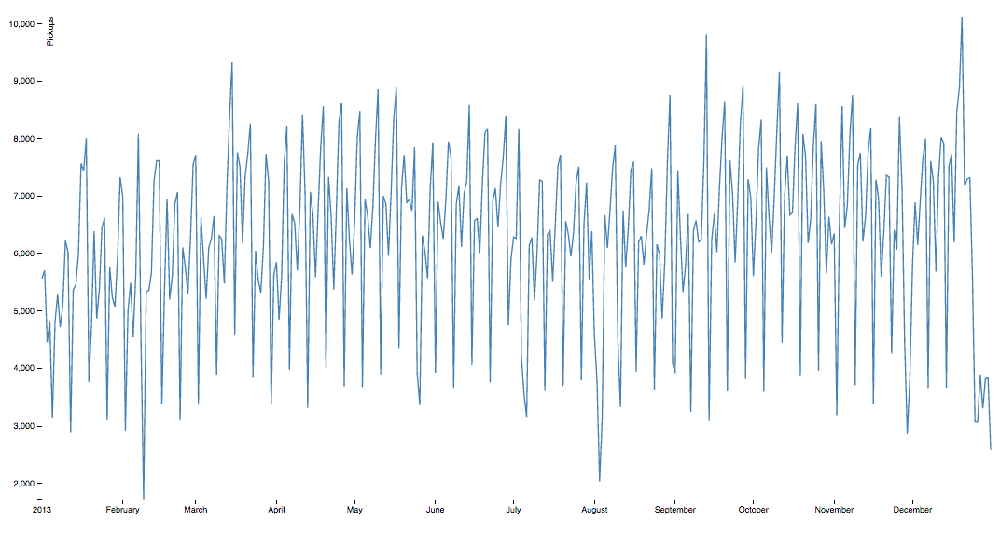
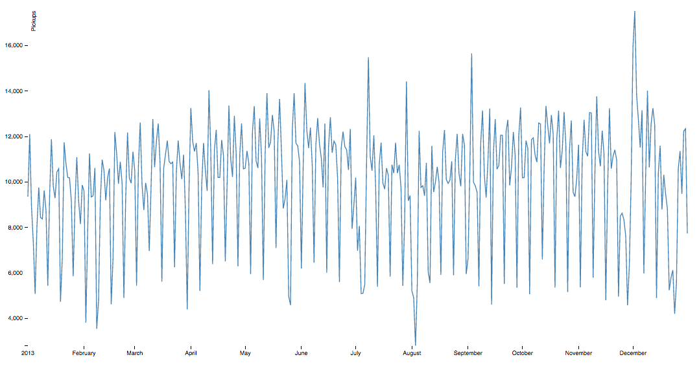
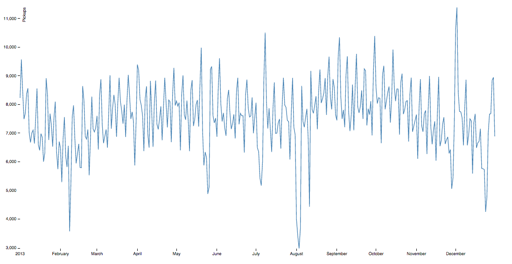
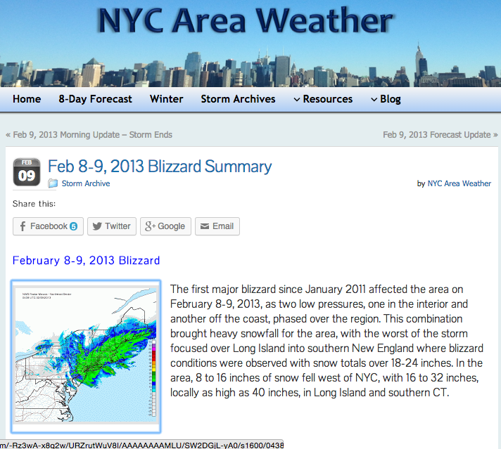
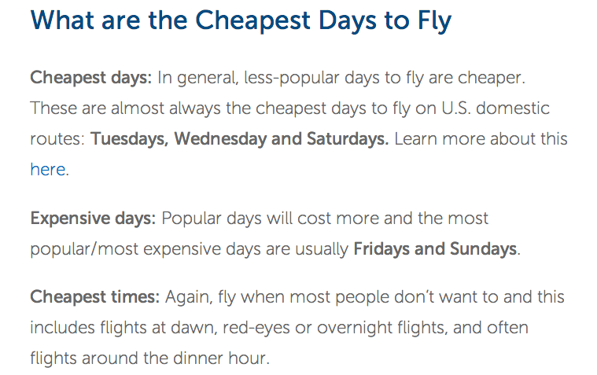

YOLO
but your,
Data-analytics
lives forever..
What did we work on?
NYC taxis
Datasets:
- Trip DataSet
- Fare DataSet
- NYC OpenData
Attributes:
License number, license name, VIN, model, agent information, etc.
So, what did we find?
JFK Pickups

JFK Dropoffs

LG Pickups

LG Dropoffs


#1
Averagely new yorkers tip more during the holiday season. Approx 18% rise in tips.
#2
New Yorkers travel on airlines a lot Wednesday and Saturday
#3
New Yorkers rarely travel on Fridays and Sundays

Most New Yorkers are smart!
Where do all these taxis come from?
Yo! What are we travelling in?
How old are these taxis?
GH : github/crc442/massive-data-buzz